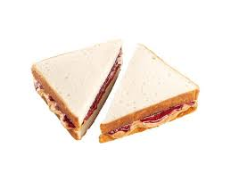

Alexis' Favorite Recipes
Peanut Butter and Jelly

Ingredients
Directions
Quality Sliced Bread
Place bread on counter
Jif creamy peanut butter
Spread peanut butter over bread with butterknife
Welch's grape jelly
Spread jelly over bread
-----------------
Place one piece of bread on top of the other